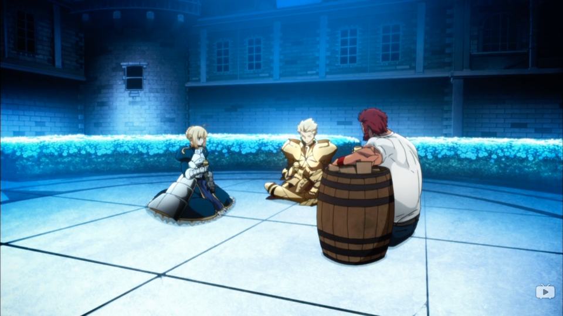

完结篇。这篇好长.. 魏晋两纪洋洋洒洒正好两百年，就到此为止吧，有缘再续。🙏
之前的几卷：
我把总结、感想什么的放在最后了。
三国
大紧老师不久前刚做了几期讨论三国的节目：晓说 第129期 三国梦之队(一) 魏天时蜀地利吴人和 可惜大紧老师只做了6期就没了。
曹魏代汉 —— 卷69 / 魏纪1（公元220-222年）
曹操在公元220年正月二十三日就去世了。当时曹丕在邺城，曹彰在灵柩旁。群臣为了少生变故，一天就把各种礼仪准备完毕，第二天就拜曹丕为魏王.. 同年十月十三日，曹丕代汉了，汉献帝成为山阳公。曹操自己不登基，这样刚即位不久的儿子就能借登基升官揽一波人心。
接着，陈群献策九品中正制。任人唯贤的曹操肯定是不会同意这样的制度的，但是曹丕同意了，或许是和士族做的政治交易吧。不过这类制度一开始肯定是利大于弊的，一直执行下去积攒了弊端却不改革这才成了恶政。好比在那个兵荒马乱的年代，光活下来就很不容易的穷苦人家哪有机会读书呢？所以显然人才出自士族的概率肯定更大。再加上人群迁徙，也没有足够的时间去施行「察举」了。不过久而久之，九品中正制固化阶级的弊端就凸显出来了，关键还是看谁是这九品的评判者。
不过感觉曹丕一直有各种小毛病，做出各种奇怪的选择，需要属下进谏。特别是辛毗，进谏了好多次..
公元221年，蜀地传言汉献帝已经遇害（是刘备放出的流言吧？），于是汉中王刘备就登基称帝了。但是刘备称帝没几个月就进攻东吴为关羽报仇，最终被火烧连营七百里、托孤白帝城….
在蜀军进攻东吴的时候，我突然注意到刘晔一直在做出正确的预判：
- 蜀国会出兵攻吴为关羽报仇；
- 应该要联蜀灭吴再灭蜀；
- 不应该封孙权为吴王；
- 后来孙权迟迟不派儿子孙登进京为质也不该仓促去攻打东吴；
- 攻打吴国的时候孙权不会出现等等等等。
奈何曹丕一直都不听..（曹丕为啥不听？？他肯定不是个傻子，那他自己的考量是啥呢？？）。在曹叡时期，刘晔又被认为是迎合上意而失去宠信忧郁而终，真是…… 刘晔一开始显然不是这样的人呀，还不是你们曹家逼的！！好心疼刘晔，他可能或多或少还是吃了姓氏的亏吧。
因此孙权接受了曹家吴王的封号，直到229年孙权才自己称帝。这个我还有印象，历史书上写过。
尚能北伐 —— 卷70-72 / 魏纪2-4（公元223-234年）
公元223年，刘备白帝城托孤。刘备在给刘禅的遗诏里除了说了著名的「勿以恶小而为之，勿以善小而不为」之外，还说了「惟贤惟德，可以服人」！😯原来三国杀里的语音就是出自这里呀！
曹丕不听进言，几次攻吴。孔明就趁这个空窗期七擒孟获平定了南蛮。公元226年，没当几年皇帝、还不到40岁的曹丕就去世了，在他治下至少汉献帝得以善终（公元234年去世），真不容易呀！所以曹丕为啥硬是要攻打吴国呢，我看到一个观点是说曹丕想趁机收拢、消耗掉曹操遗留下来的尾大不掉的军队势力。🤔make sense.
年仅20岁的曹叡即位，曹叡最终也是30岁就去世了。连续两任皇帝都是英年早逝，这才要托孤，再加上后边的皇帝都不行，这才被司马氏篡权。曹叡有一个毛病就是热衷土木.. 曹丕和曹叡都有这样明显的不足，但都有良臣劝谏，给我感觉像是汉景帝。
与此同时，公元227年，诸葛亮在汉中写下了出师表，准备北伐！直到公元234年诸葛亮去世😔。话说在公元234年诸葛亮去世之后，好像就没有什么大规模的战斗了，一直到灭蜀之战。
公元229年，孙权称帝。同年九月迁都建业。不过太子孙登以及尚书九卿仍旧留在旧都武昌，让大将军陆逊辅佐太子，监督全国军政大事。
公元233年，发生了一件233的事情。
- 公孙渊派人向孙权称臣，孙权非常开心，想要派人度海大赏公孙渊。张昭表示反对，和孙权吵了起来..
- 孙权说你屡次在大庭广众之下顶撞我！张昭说这是因为吴国太当年托孤之言犹在耳畔、我必须尽忠呀！两人相对而泣，孙权十分感动，然后继续不听张昭的，派人去了辽东。
- 张昭忿忿不平，声称有病不上朝，孙权就下令用土把张昭家的大门都塞住，张昭那犟性子，自己又从里头用土把门封死…… 😂😂😂
- 最终是孙权错了，公孙渊杀了孙权派去的使者又向魏国称臣了。孙权多次派人慰问张昭，向他道歉，张昭就是不出来。
- 有次孙权出宫经过张昭的家门呼唤他，张昭回答病重。孙权就让人火烧张昭家门，张昭还是不出来。孙权灭了火，自己站在门中长时间等候。张昭的几个儿子这才扶着张昭起床出来。孙权就用自己的车把他拉回宫中，深切责备自己。张昭不得已，终于重新参加朝会。。
相爱相杀。。这段让我想到了张耳陈馀的故事，也是这么欢乐😂。
几家托孤几家愁 —— 卷73-75 / 魏纪5-7（公元235-252年）
公元239年，曹叡去世。托孤给曹爽以及司马懿。但曹爽嘛…. 所以这之后曹家就要不行了。
公元247年，骄奢无度的曹爽独揽朝政大权，司马懿开始称病，不上朝参与政事。这一下就过了好久.. 一年多之后的248年冬天，某位官员上任前到司马懿家去辞行，司马懿假扮中风，
- 故意在更衣时把衣服掉在地上；
- 故意在喝粥的时候让粥从嘴边流出沾满前胸；
- 故意听不清来访官员的话。
于是来访官员就报告曹爽说司马懿形神已离、不足虑也。
所以司马懿真的是能忍，过了这么这么久.. 在假扮中风让曹爽放松警惕之后，到了249年正月，趁着皇帝、曹爽兄弟等人去扫墓的时候派兵控制了洛阳。结果曹爽兄弟从初夜一直坐到五更，曹爽一把将刀扔在地上道：「即使投降，我仍然不失为富贵人家」。所以曹爽你就这么怂啦？？！Orz 然后曹爽兄弟让魏帝下诏免除自己的官职、送魏帝回宫之后就回自己家了。没过多久曹爽兄弟、他的谋士、朋党们就被找了个理由逮捕入狱诛灭三族。所以曹爽你..
公元251年，司马懿死了。所以真的是能熬呀。
曹爽被诛杀之后的一个蝴蝶效应是，夏侯霸投奔了蜀国，姜维很器重他。
公元241年，吴国的太子孙登去世，孙权白发人送黑发人。接着新任太子与鲁王之间分成了两派，这是最伤的。最终，孙权废了太子、赐死了鲁王、立了小儿子孙亮为太子（公元249年）。之前鲁王一系的人多次诬告，孙权甚至遣使责问陆逊，导致陆逊愤懑而死？？？孙权真是老糊涂了。不过根据这个回答里的观点，这种强行树立对立面以使老皇帝继续掌握权柄的手段在贵族政治时代似乎是不可避免的一种选择。
公元251年，孙权得了中风，252年去世。最终托孤给了诸葛恪。
司马擅权·淮南三叛 —— 卷76-77 / 魏纪8-9（公元253-261年）
公元254年，司马师废了当时的魏帝另外立了个新皇帝。司马懿的弟弟司马孚倒是很悲伤。然后很快，在公元255年，毋丘俭、文钦在寿春起兵讨伐司马师。文鸯是文钦的儿子，书里记载
鸯以匹马入数千骑中，辄杀伤百余人，乃出，如此者六七，追骑莫敢逼。
就是说文鸯在转进的时候单枪匹马闯入数千骑兵之中，一次就杀伤百余人，然后突出重围而走，这样来回六七次，让追赶的骑兵再也不敢向前紧逼。惊了！！
不过也正是这场叛乱使得司马师亲征，使他病情恶化不久就去世了，才有了后来司马昭的代魏，不然不知道司马师司马昭之间会不会还会有争斗呢。
公元257年，诸葛诞也起兵了，司马昭率军来平乱。文钦和诸葛诞合兵一处，但是诸葛诞后来（公元258年）杀了文钦，最终文鸯向司马昭投降，诸葛诞也被消灭。这一战中钟会出谋划策很多，司马昭对他日益亲近重视，时人把他比作张良…… 所以果真是
司马昭之心路人皆知
了。。这句话是公元260年魏帝在召见亲信的时候说的。当时魏帝脑子一热，带领宫中宿卫和奴仆们呼喊着就出了宫。最终还是贾充带着手下前来和魏帝硬刚，喊着「司马公养你们这些人正是为了今日，今日之事没什么可问的」，然后手下冲上去把魏帝杀死在车下.. 司马昭闻讯大惊，自己跪倒在地上。司马孚把魏帝的头枕在自己的腿上大哭。所以司马孚居然是这么忠心于魏的呀。
这个弑君应该是贾充自己的所作所为，并非司马昭所安排，但司马昭哪里脱得了干系呢。陈泰表示，只有杀了贾充才能稍稍谢罪于天下，司马昭考虑很久说：「你再想想其它办法」，哈哈哈哈哈。最终贾充也没事，反而魏帝被降格为高贵乡公，最终以藩王的丧礼安葬了。接着，司马昭又立了个皇帝。司马昭表示，我得按照套路来。
从此，司马氏有了弑君的原罪。从《三国六大家族列传》这本书里我看到了一个之前没有注意到的观点：
由于公开弑君的巨大污点，晋朝的意识形态只能在孝上做文章，根本就没有脸面去要求臣民效忠。儒家以忠孝为核心的道德体系彻底崩溃。
似乎很有道理的样子，因为弑君，没法再提倡忠了，那就只能多提倡孝，这对于西晋出现的那些越来越极端的「孝」的故事肯定是有推动的。来到一个「极左翼看不惯普通左翼，导致最终大家一起越来越极端化」的恶性循环。现在的世界上也有这样的鲜明例子呀！另外，没有忠，没法提倡儒学的核心价值观也是玄学甚嚣尘上的原因之一吧。幸好儒学在凉州之地保存下来了，幸好后来北魏孝文帝汉化改革之后，从凉州又把这些传承下来的儒学给迁回来了。🙏
卷87里有记载一段话，是别人写给王导的，说的是西晋灭亡的原因：
中华所以倾弊者，正以取才失所，先白望而后实事，浮竞驱驰，互相贡荐，言重者先显，言轻者后叙，遂相波扇，乃至陵迟。加有庄、老之俗，倾惑朝廷，养望者为弘雅，政事者为俗人，王职不恤，法物坠丧。夫欲制远，先由近始。今宜改张……
翻译过来是：
中华之所以被颠覆破坏，正是因为选择人才失当，徒有虚名的优先而作实事的却靠后，竞相追逐浮华，互相荐举，言过其实者先显达，说得少一点儿的后录用，于是互相推波助澜，导致国家衰落。加上崇尚庄子、老子学说的风气，扰乱蛊惑朝廷，无所事事地修养名望的人被看作大雅士，勤勉于政事的人被认为是平庸俗气的人，不顾惜朝廷职务，朝廷的制度被丢弃。因而想要考虑远大的事业，得先从近处开始，现在就应该改弦更张，……
我觉得很有道理。儒学或许有这样那样的弊端，但相比于崇尚清谈、嘲讽案牍之劳形的玄学，在北方中原地区民族融合后传承下来的更做实事的儒学反而更像承接了中华正统吧？究其根源，还是要把锅甩给得国不正的司马氏。👎
灭蜀 —— 卷78 / 魏纪10（公元262-264年）
公元262年，第一次出现了嵇康等竹林七贤的描述！但是在资治通鉴里他们应该没什么戏份的吧.. 他们的思想倒是很有戏份。
公元263年，邓艾和钟会两路兵马开始伐蜀，然后已经是68岁老将的邓艾一波偷袭到成都城下，再劝降，就搞定了。。刘禅投降时，姜维在前线，听到消息之后就投降了钟会。钟会心怀叛离之志，拦截了邓艾的奏章和书信，模仿自己自己改写了其中的话，又毁掉司马昭的回信，自己重新写一封让邓艾生疑…
于是，公元264年，司马昭下令用囚车押邓艾回京。司马昭也看出了钟会的叛变可能，他成竹在胸，已经派了贾充带兵一万入蜀。钟会知道消息之后大惊，只好提前叛变。但是手下叛乱把钟会和姜维都杀了… 所以司马昭应该早就防着钟会没有把他当自己人吧。
还是264年，孙皓继任吴国皇帝。但登基不久就一改之前的明君气象，开始残暴骄横沉湎酒色..
西晋
司马代魏 —— 卷79 / 晋纪1（公元265-272年）
公元265年，司马昭去世，太子司马炎即位成为晋王。学40多年前曹丕的模样，同一年就让魏帝禅让皇位了。成为晋武帝。值得一提的是，司马孚最后拉着魏帝的受流泪叹息说「臣死之日，固大魏之纯臣也。」我到死都是魏臣。司马孚死的时候确实仍旧忠于曹魏的🙏。
哦对了，陈情表就是差不多这时候（公元265年）李密写给晋武帝司马炎的，我到现在还会背几句：「臣密言：臣以险衅，夙遭闵凶」。
晋武帝司马炎一直想要灭吴一统天下。羊祜统领荆州各项军事，东吴这边，就是陆逊的儿子陆抗了。俩人都是名将！俩人也惺惺相惜。
而这个时候，东吴的孙皓还在自己作死，没有趁机进攻晋国一波。大紧老师在晓说节目里里说吴国像是封建领主，无心争天下，只关心自己的一亩三分地，是有道理的。
孙皓残暴的程度听着都像是商纣王了，什么在宴会上或剥人面或凿人眼、什么二千石大臣家里的女儿每年都要申报姓名年龄，只有皇帝考察拣选不要的才可以出嫁.. 残暴骄纵到我都有点不敢相信，甚至怀疑是晋人抹黑。
三家归晋 —— 卷80-81 / 晋纪2-3（公元273-288年）
原来「周处除三害」的典故就发生在这个年代！
还有一件事情，当初曹芳被废之后，范粲为他送行，后来就称病不出门，装疯不说话。整整36年！他都没有说话，一直到84岁的时候去世。佩服！
羊祜上疏建议伐吴，但是朝中有不少人反对，比如贾充。但是羊祜认为，现在吴王残暴，要是等吴国立了一个新的贤明的君主，那统一大业就的再往后拖延了。后来羊祜在去世前举荐杜预代替他继续伐吴大业。
我感觉晋国和吴国僵持得有点太久了。不过司马炎可能也确实需要这么久来稳固自己的地位。毕竟之前司马家篡魏的过程中，对蜀作战的前线军队（钟会）、对吴作战的前线军队（淮南三叛）可都叛变了呀。
到了公元279年，灭吴之战开始了。吴国人铁索横江，被晋国用火烧开，畅通无阻。所以单纯用长江作天险来防守是没有前途的，所以守江必守淮。剩下的就是平推了。在灭吴的过程中，有人建议杜预 take it slow, 杜预表示
今兵威已振，譬如破竹，数节之后，皆迎刃而解，无复著手处也。
这就是成语「势如破竹」的出处！
贾充、荀勖等人在进军之前一直强烈反对伐吴。我看到一个说法：他们都是人精，不会看不出来在灭蜀之后吴国已经轻轻松松可以搞定了。只是在灭吴之后呢，司马炎肯定要加强皇权削弱其它世家了。那么还不如稳一稳，留着吴国也闹不出啥幺蛾子。再加上主张灭吴的羊祜、杜预、张华在灭吴之后肯定要被重用，贾充这些人就分不到多少羹了。不过关键还是在司马炎，他是自己吃父亲老本上台的，没有足够的功勋，看到有灭吴这么一个看着轻松功绩显赫的事情还能不去做么。
另外听说在灭吴之后的封赏里，出了最大力气的羊祜、杜预、张华、王濬等人都没有得到什么大赏，还被世家集团们一阵怼。杜预还得想朝中贵人贿赂，只是为了避免他们加害于杜预.. 里头的政治斗争真黑暗啊！
你膨胀了 —— 卷81 / 晋纪3（公元280-288年）
公元281年，晋武帝司马炎下诏挑选孙皓的宫女五千人进宫…. 5k 呀！宫中妃嫔的数量几近 1w 人。由此可见在这方面原本他和孙皓又有多大区别呢。司马炎在灭吴之后就「颇事游宴，怠于政事」了。应该是达到了一个大目标，开始懈怠了。
王恺、石崇斗富就发生在这个时期，👎👎👎。我也因此对司马氏的皇族更加鄙视了。
何不食肉糜 —— 卷82 / 晋纪4（公元289-298年）
公元290年，晋武帝司马炎去世，你说继位的皇帝总不可能是个傻子吧，诶还真是！继位的晋惠帝说出了惊世骇俗的「何不食肉糜」。
当初朝廷上下都知道晋武帝司马炎立的太子司马衷糊涂愚蠢，不能负起王位继承人的重任。
- 我看到有观点说司马炎必须得立司马衷，因为他算是长子，如果不立长子的话，司马炎的执政合法性就没了，司马炎的弟弟司马攸在朝野间颇有声望，如果不立长子的话，司马攸的呼声就更高了。但是司马衷毕竟是个傻子呀！因为是长子，即使是个傻子也可以当皇帝，这对于合法性没有多大影响的吧？
- 还有一种说法是说晋武帝喜欢晋惠帝的儿子——皇太孙，所以没有废黜太子。妹想到啊，后来这皇太孙在晋惠帝登基之后被贾后给搞死了。。
真的，要不是司马炎的后事没有安排好，将来弄出辣么多幺蛾子，司马炎的评价肯定能涨一档。他死了以后先是杨氏外戚（晋武帝司马炎的老婆）作威作福，然后是贾氏外戚（晋武帝司马炎的儿媳、晋惠帝的老婆）把杨氏干掉了执掌大权。再后来贾氏作死，进入了八王之乱剧本，一个个有实力的王爷们你方唱罢我登场，最终搞到五胡乱华、神州陆沉、衣冠南渡。😔
有人说，司马炎留下的政治体制在大家都是聪明人的时候会有效果——大家相互牵制达到平衡。但是他没想到的是，那些外戚、那些亲王都是一群被权力欲冲昏头脑的傻子啊！！！一个个都有着与能力完全不匹配的欲望..
不过我也看到有观点说黑「司马炎分封诸王」其实是不公平的，因为两晋南北朝期间，大家几乎都是这么做的。世家、将领的力量太强大了，只有王族宗室的力量可以信赖。这个观点也有道理，因为司马家自己就是从一个世家、权臣爬上来的，他肯定会不由自主地着重防止另一个司马家这么爬上皇位，以至于甚至矫枉过正。因而，在曹魏时期不受重视的皇族宗室力量就被赋予了巨大的权力。但是万万妹想到，你们家的这些外戚、亲王都是些傻子啊！
论中古时期的皇权
魏晋时期出现了对分封/郡县/郡国制度的反思。当时一个反思就是：还是得要有分封，或者说，还是得要有亲王宗室的力量！理由是：古代帝王必定任用同姓皇族、以表明亲近亲族，也必定任用异姓大臣、以表明尊重贤能。如果只有前者，皇权就会逐渐衰弱（应该是没有贤能之人吧）；如果只有后者，皇权就会被夺取。因此当王莽乱政的时候封国诸侯甚至有制造天赐祥瑞为王莽歌颂恩德的。
怎么说呢，我觉得这确实是有道理的。从那个知乎回答以及漫评两晋南北朝的历史这篇文章（写得很棒，就是有点啰嗦..）里所传达的观点来看，皇权与下边的外戚、宗室、权臣、军阀、士族豪强等等等等势力的此消彼长的关系是不可避免的。
皇权想要的是下边的势力相互平衡、相互制约。汉武帝施行的推恩令是这个目的的代表作，在罗辑思维259期 | 长子继承制里就提到了这个，说的是中国英国之间财产继承权的区别——英国是嫡长子财产通吃，而中国是嫡长子继承名誉，但是财产是均分（e.g. 推恩令）。这个后果真的就焉知非福了：
- 中国古代因此人多，经济发达。英国同期就人少，非嫡长子有的（据说 1/4）甚至终生未婚无子。
- 但是到了工业革命前夜，英国有大地主有资本，有各类需要自己闯荡的非嫡长子有冲劲有进取心；而中国这里大家都有一份家产，进取心肯定就更小咯，小农经济也不适合工业革命。
所以风水轮流转 ╮(╯_╰)╭ 罗辑思维这里是不是为了结论强行找论据咱另说。从跑题回来.. 所以，中古时期的皇权处于一个不稳定的阶段，皇帝必须让自己的亲族成为帝国的主要权力者，但是这只是饮鸩止渴，不然的话光凭一个皇帝的名号驾驭不了偌大个帝国。然后因为这些宗室、外戚权力巨大，老皇帝想让自己家基业达到万世，就必须早早考虑太子接班的问题，不然只有一个太子的名号登基之后肯定无力控制帝国政府的。但是，另一个核心矛盾就是：老皇帝们会想让太子接班，但是又不敢让太子太接班，不然未来的皇帝直接怼死老皇帝怎么办。这个就是皇帝终身制的不足了——「岂有四十年之太子乎」。而在尝到了权力的滋味之后，哪个皇帝愿意拱手让出帝位呢。
这或许是中古时期的一个死循环。这个锅能甩给司马氏吗？或许不行，在那个皇权不稳、同时又有一波波民族融合浪潮的几百年间，司马氏也没法给出更好的解决方案了。所有人都跟着了魔似的往铁王座上冲，冲上去了又坐不稳，很快身死族灭。
直到后来科举制度出现之后才有了一丝跳出这个循环的曙光，科举使得官员再难构建一个以家族为中心的利益集团，使得四世三公的士族豪门成为历史，于是挑战皇权开始变得不再那么容易，于是改朝换代才少了下来。在这之前，皇帝真的谁都相信不了，无论哪一方势力做大之后都能威胁皇权（哦或许除了宦官，宦官本身就代表着皇权）。这或许才能解释为啥宋明清时期平庸的皇帝也能让皇权稳定，而两晋南北朝时期那么多从血与火中拼杀出来的枭雄却总是留下外戚专权、皇族骨肉相残、权臣擅权的政治格局。
从罗辑思维第210期 | 权力的基础我看到科举的另一种药理解释：
原本在南北朝时期，世家大族的实力来源于他所控制的土地、人口、及其之上的武装力量，这些世家们都是大地主。而在隋唐出现科举制之后，世家大族获得权力的途径就轻松了很多，他们读书，有钱有能量享有更大的教育资源，那在科举这个框架下，他们进入国家权力政治体系的成本比原本靠自己掌控土地、人口的方式降低了很多。
那么人总是会选择那些好走的路，而忽略这背后付出的代价，这像是个不可避免的囚徒困境。当世家和寒门都在同样科举这个框架内时，更大的教育资源所带来的鸿沟其实比之前小了非常多。寒门自然就更容易逆袭咯。而且没有这些硬性的实力，被搞死就容易许多了。罗辑思维210期里提到了这一点：地方上的权力既然不再是士族的必须，他们就慢慢都聚集到长安去了。公元905年，朱温攻进长安，「在黄河边一口气杀掉了30个士族的高官，世族这才真正的没落」。后边这句是罗辑思维的原话，我觉得这句有点夸大，但是世家们逐渐放弃地方上的权力，确实是他们没落的根本原因。嗯，make perfect sense.
所以，当我们站在后世的角度上，不应该简单粗暴地说要是司马氏没有大肆分封诸王就没有后来的八王之乱就没有五胡乱华等等等等。这样简单的上帝视角是没有意义的，没有宗室力量的制约，其它各个政治势力早就跳出来了。这，或许就是历史的进程吧。
八王之乱 —— 卷83-86 / 晋纪5-8（公元299-308年）
贾后贾南风搞死了太子，这下事情大发了，她以为她的权力来自于哪儿呢，要不是那个傻子晋惠帝，你算个锤子呀。现在你把人儿子搞死了，自己不是马上也要跪了么。
于是很快贾后就被赵王搞死了，赵王成为了朝中权力最大的人。淮南王有声望，和赵王硬刚了一波，但是被前来传伪诏的人给刺杀了..
赵王的亲信孙秀杀死了石崇，因为他曾经向石崇讨要爱姬绿珠石崇不给！绿珠！啊人物对上了。
公元301年，赵王司马伦逼迫晋惠帝禅让自己称帝了以后大封群臣，每当朝会时，戴插貂尾、蝉羽等高官饰物的人充斥席位，时人为之谚曰：「貂不足，狗尾续。」狗尾续貂的出处就是这里了！
司马伦是篡位上台的，就像打破了潘多拉魔盒，中央的权威锐减，接下来各个藩王就一个个起来搞事情了。接下来有出场的齐王的名字叫做「司马冏」，囧rz..「囧」和「冏」好像是通假字。
八王之乱我就不想关注了，就看这个回答梳理过程吧，写得超棒！这段时期用「权力的游戏」来指代真是再恰当不过了。看得心好累😔。
顺便提一下，回答的这个作者「吕轻侯」在他的公众号「阅过边界」里连载了好多两晋南北朝时期的文章！我在暑假的时候基本把他公众号两年多来的历史文章基本都听了一遍，对原本非常陌生的魏、晋、五胡十六国时期有了个大概的了解，不然的话可能这一篇里头就不会有东晋·五胡十六国的这100年了😂。我觉得他写的超棒，欢迎大家去关注，我就可以不需要班门弄斧了。我下边也会链接一些他公众号上的文章。
永嘉之乱·神州陆沉 —— 卷87-89 / 晋纪9-11（公元309-316年）
公元304年，匈奴人刘渊（五胡十六国的“国父”：刘渊）自立，他说：「大丈夫当为汉高、魏武，呼韩邪何足效哉！」。刘渊说是匈奴人，其实在文化上早就汉化了。
公元310年，刘渊去世。儿子刘聪即位。因为刘聪不是嫡长子，对兄长刘恭有猜忌，趁刘恭睡觉的时候挖穿房间墙壁把刘恭杀了…. 下一卷就有说到，刘聪也是时不时作死。刘渊创下的基业也因此很快就要完蛋了。
永嘉之乱：公元311年，刘渊的儿子刘聪攻破洛阳，俘虏了晋怀帝，杀死了当时的太子。
公元313年年初，刘聪杀了十多位西晋的大臣，晋怀帝也遇害了。书里评价说晋怀帝其实天资清高，如果生在天下太平未必不能成为一位好皇帝，可惜生不逢时，不是他的责任，却要承担后果。这就是皇帝这个位置所附带的宿命吧。
祖逖(tì)出场了。闻鸡起舞的祖逖！闻鸡起舞太有画面感太有感染力了！祖逖（五霸岗上，闻鸡起舞：祖逖）和刘琨（西晋帝国的守夜人——刘琨）是少时好友，后来刘琨在北方保境安民苦苦支撑，祖逖从南方北伐收复故土。他们都是那个浑浊时代的光🙏🙏🙏。
太沉重了，来看看陶侃吧，这位将来的东晋重臣（出身低微的陶侃，为什么能成为东晋帝国的实权人物？）：
陶侃在广州没有什么事情可做，就每天早晨把一百块砖搬到屋外，黄昏时又搬回到屋斋里。
有人问他其中的缘故，陶侃回答说：“我正致力于收复中原，现在的生活过于优闲安逸，我担心那时不能够承担工作，所以自己活动活动罢了。” 😂😂😂
东晋·五胡十六国
衣冠南渡（东晋）—— 卷90 / 晋纪12（公元317-318年）
在公元311年被刘聪掳走的晋怀帝被刘聪杀害之后，晋愍帝在长安即位。公元前316年12月，长安投降了刘渊创立的前赵帝国。
于是从317年3月开始，就有长安逃亡南下的官员来到建康，宣称受到晋愍帝诏书，让琅琊王司马睿统摄万机。司马睿自己还矫情啊，坚持不肯即位，只是先称晋王。
公元318年3月，晋愍帝遇害的死讯传到了建康。重臣又开始劝进此时为晋王的司马睿，司马睿又不同意，大臣纪瞻说：
今两都燔荡，宗庙无主，刘聪窃号于西北，而陛下方高让于东南，此所谓揖让而救火也。
就是说刘聪在北方盗用名号，您还在这里推谢帝位，就像急于救火却恭礼谦让！但是司马睿听了还是不同意。直到又过了3天，司马睿才即皇帝位，然后打算对所有曾经投贴建议自己接受皇位的人以格外优宠，凡官吏都增加爵位一等，平民提升为官吏，大约有20万人。。看到这些我非常👎司马睿！
但司马睿本来也不是什么特别有能力的皇帝，他能创立东晋要多亏了王导（东晋教父：王导），王与马同天下指的就是王导与司马睿，也正是王导开启了东晋一朝的门阀政治——《东晋门阀政治》。
刘曜·石勒（汉赵）—— 卷91 / 晋纪13（公元319——321年）
公元318年，刘琨在这一年被害身亡😔。
刘渊的儿子刘聪也在公元318年病重，托孤给了刘曜·丞相和石勒·大将军。他们后来分别成立了前赵和后赵。
- 刘氏一家没多久就都被手下的大臣靳准叛乱杀光了。。
- 刘曜和石勒都带兵前来平乱，石勒在跟靳准打着呢，刘曜自己即位了。。
- 靳准派使者向石勒求和，石勒把使者绑着送到了刘曜那里，结果刘曜对使者说是靳准使得朕能登上帝位呀，功劳很大，如果他能早日奉迎大驾，我就把政事全部委托他管辖（假的吧），使者回去之后靳准犹豫不决。不久，靳准的手下杀了靳准，投降了刘曜。
- 石勒大为光火，妈蛋，是我辛辛苦苦打的，继续进军攻打靳准残部靳明。石勒的养子（？）石虎打的靳明嗷嗷叫，向刘曜求援，刘曜背后捅了靳明一刀，族灭了靳氏一家老老少少。╮(╯_╰)╭
依靠着评判的功绩，刘曜封石勒为赵王，礼遇如同曹操之于汉室。紧接着刘曜马上就被小人蛊惑，杀了石勒派来进献的官员。石勒大怒：
彼之基业，皆孤所为，今既得志，还欲相图。赵王、赵帝，孤自为之，何待于彼邪！
刘曜定都长安，刘曜立后妃羊献容为皇后，这位羊皇后就是那位晋惠帝司马衷的第二任皇后。。。。刘曜曾经问羊皇后：我和司马家的小子比起来怎么样？羊献容说：自从做了您的妻子，才知道天下自有大丈夫。是呀，晋惠帝这个 baseline 实在是低呀，低到有点心疼。。刘曜非常宠爱羊皇后😂。
这位羊皇后一生可称传奇！因为晋惠帝司马衷的缘故，一生五废六立、两朝为后！！😱这在史上也是独一无二的了吧 Orz..
刘曜不久改国号为赵，这不是很尴尬吗，你是赵，石勒那边也是赵。。所以刘曜这里叫前赵、或者叫汉赵，石勒那里叫后赵。不过刘曜的汉赵这里似乎不如石勒那里治理的好。比如说石勒因为百姓刚刚恢复旧业，财物储备不够丰饶，因而禁止酿酒。话说石勒那边发展农桑提倡汉化，但是他们羯族人在当时还是被称作胡人，带有歧视意味，所以石勒很忌讳「胡」这个字。也因此，当时的「胡瓜」改名为「黄瓜」..
公元319年，后赵灭了汉赵。
与此同时：
祖逖此时正在北伐呢，打到了石勒的后赵地盘边上，被挡下来了。石勒和祖逖搞好关系，把一个叛逃来的罪臣斩首送回祖逖，说「将军之恶，犹吾恶也」。祖逖深为感动，从此也不接受从石勒那里叛逃归附过来的人了。再加上之前两国边境之间就有默许的商业贸易，终于开始逐渐得以休养生息。公元321年，祖逖病逝。
慕容氏鲜卑也开始在东北那里崛起，打败了高句丽、段氏鲜卑和宇文氏鲜卑的三国兵马。这就是慕容复朝思暮想复国的那个慕容氏。
王敦、苏骏之乱（东晋）—— 卷92-94 / 晋纪14-16（公元322-331年）
祖逖死后，原本有些忌惮祖逖的王敦更加肆无忌惮。王敦是王导他们王家的人。公元322年正月14日，王敦举兵「清君侧」.. 然后2个多月就一路打到了建康，聚集军队，也不去朝见司马睿。司马睿派使者和王敦说：你如果还没有将朝廷置于脑后，那么就此罢兵，天下还可以安然相处，不然的话，朕就回到琅琊当我的琅琊王给贤人（您）让路。😓
王敦也没敢就这样篡位，杀了几个司马睿心腹，独揽大权，愈发暴虐傲慢。司马睿忧愤成疾，这一年的11月（农历）去世了，即位的是晋明帝司马绍。剧透一下，司马绍是这终晋一朝历史上比较少有的厉害些的皇帝😓。司马绍的皇后是庾氏家族的女儿，皇后的兄长庾亮就是将来的庾家带头人。
但王敦确实是在考虑篡位了，步步紧逼。王敦有个侄子王允之，当时王允之因为醉酒就告辞先睡了，然后王敦和手下钱凤在一起商讨叛乱之事（上头了？），被王允之原原本本地听到了！王允之随即在睡卧的地方大吐（辛苦你了..），弄得衣物、脸面上都沾上了污垢。钱凤走后，王敦才想起来王允之还在这，前来看到王允之睡卧在呕吐的污物中这才放心.. 后来王允之借着一个正常由头回归朝廷报告了这个事。
不过王敦生了重病。。王导听说这件事就带领王氏子弟为王敦发丧😂😂😂，大家以为王敦确实死了，士气大涨。明帝司马绍派兵讨伐王敦。王敦很愤怒，但是自己的病情还在加重呢，只好派手下迎战。王敦的大哥王含主动请战，说「此乃家事，吾当自行」，但是王含他能力不行啊！战败之后王敦勃然大怒，但是很快自己也病死了。
王敦就这样覆灭了，感觉虎头蛇尾啊！紧接着公元325年，司马绍也病死了啊！！才26岁，因而平定王敦之乱是他在位的主要事迹了。
新皇帝还年轻，因而庾亮作为外戚家族掌控朝政。庾亮听说是个美男子，但是现在的他政治手段还很 naive, 既怀疑流民军头领苏骏、祖逖的弟弟祖约的忠诚，也惧怕陶侃的深得人心。不过祖约确实自视甚高，觉得托孤的遗嘱没有他不公平，其实能力真不行.. 后来祖约投降了石勒，最终被灭族😓。
庾亮就直接不顾反对，激化了苏骏的叛乱，结果自己军事能力不行，谏言也不听，打又打不过.. 结果建康直接就被苏骏打下来了.. ╮(╯_╰)╭ 这个图在这个时期真的是万用。。
那这个烂摊子要怎么解决呢。。即使庾亮做了这么多错事，温峤还是很看好他.. 温峤是当年被身在北方苦苦支撑的刘琨派来到建康劝进的，后来就被强留在了东晋。桓温名字里的温字就来自于温峤，是当年温峤在来到建康之后有一次拜访桓温家，还不到一周岁的桓温被温峤夸赞，桓温的父亲就给他取了这个温字。
温峤和庾亮又拉来了陶侃、后来还有郗鉴，但苏骏军队战斗力强悍呀，毕竟是在北边和胡人真刀真枪干过的。最终还是苏骏趁着醉意浪了一波，真の马失前蹄被陶侃部下投矛射死…. 苏骏叛乱这才被平复.. 这场叛乱打到温峤都考虑迁都豫章了..
但是在平定苏骏叛乱之后，王导认为应该表现宽厚，基本没有什么处罚。显然他们不是在为国家考虑咯。平定战乱后不久，公元329年，温峤就去世了。
石勒·石虎（后赵）—— 卷94-95 / 晋纪16-17（公元328-337年）
与此同时，北边的刘曜（前赵/汉赵）和石勒（后赵）也在打架，嗜酒的刘曜喝得醉昏昏的，被石勒一波带走俘虏了。之后刘曜的儿子不成器呀，很快就被石勒统一了北方。
苏骏和刘曜的故事告诉我们，大仗之前指挥官不要喝酒😓。
哦对，我一直没有提到身处西北地区的前凉后凉，因为他们的存在感确实不大.. 直到前赵灭亡、后赵统一中原的那段时间他们才开始上场一下。。我也不是很关心那里，但是毕竟是他们保存了儒学正统👏。
公元330年，石勒称帝，封自己的儿子为太子。石虎很愤怒，觉得自己军功最大，成就大赵功业的是我，大单于的称号应当授予我，现在却给了个奴婢所生的黄口小儿。这位黄口小儿石弘喜好写文章，亲近儒雅之士。按理来说，以武功夺天下、以文治守天下是卓有成效的套路。但是有暴虐的石虎在这里，确实有大臣向石勒进言：将来您百年之后，仁孝温恭的皇太子可能控制不住局面，应该逐步减少石虎的权势。
我还挺佩服石勒的（驯服的野兽：石勒），他从一个奴隶的地位一步步当上了皇帝，而且在326年石勒也开启了九品中正制，开始设立秀才、孝廉考试经策的制度。
有个关于石勒的经典故事：说石勒在大宴群臣的时候问朕可与古代哪个皇帝相比呀。大臣回答神武谋略超过汉高祖。石勒笑着说朕如果遇到汉高祖刘邦，应当向他北面称臣，与韩信彭越比肩；但如果遇到汉光武帝刘秀，那就要跟他逐鹿中原掰掰手腕了。大丈夫行事应当光明磊落，不该仿效曹操、司马懿那样欺凌他人的孤儿寡妇。（虽然石勒死后他的孤儿寡妇马上就被石虎欺负了..）因为@到了刘邦与刘秀，这段话被很多人知道。从石勒推行的政策来看，他的眼界确实比石虎这样的莽夫、比南边的门阀士族不知道高到哪里去了。这个「三皇排位」的故事就像 Fate Zero 中的三王论道画面一样..😂 
石勒虽然没上过学，但是喜欢让儒生读书给自己听，发表的观点也都令人心悦诚服。有次听到汉书里郦食其劝刘邦册立战国时六国诸侯的后裔的时候大惊：这种做法为何最终能夺得天下？直到听到下一段里张良劝谏，才说幸亏有这么回事。
所以，这样一个有着高明政治智慧、摸爬滚打了那么多年的人，会看不到在自己死后石虎的威胁吗？我觉得那就只有一种可能——不得已而为之，要嘛石虎的力量是不得不依靠的，要嘛它已经尾大不掉了。
公元333年7月，石勒去世。石虎在石勒病重前已经掌控了局势，原本的太子石弘大为恐惧，说自己软弱，要让位给石虎。石虎说太子即位是礼仪。石弘流着泪坚决辞让，石虎发怒说：
若不堪重任，天下自有大义，何足豫论！
就是你先当着，果断时间自然会因为你不堪重任把你废掉的，这程序我们还是要走完的。╮(╯_╰)╭ 😂心疼石弘。很快，稍微击败了叛军的石虎就拥有了仿照曹操之于汉献帝旧例的待遇..
公元334年，石弘又拿着印玺找到石虎，要把君位禅让给石虎。石虎又说「帝王大业，天下自当有议，何为自论此邪！」很快，石虎说石弘愚昧昏暗，谈什么禅让，要把他废黜。废黜不久也都被石虎杀了。
石虎这种人哪里会治国？很快就搞的乌烟瘴气。石虎的太子石邃也暴虐无道，我感觉它是个性变态，它杀了美貌姬妾，吃人肉、装裱传看首级，我写下这几个字都觉得心理不适。怎么会有这种变态？！！石邃最后被石虎所杀。
宴安江沱、肆情纵欲（东晋）—— 卷96 / 晋18（公元338-341年）
王导和庾亮不合，不过这俩人我都不喜欢。。王导性情宽容仁厚，换个角度说就是对作奸犯科不守法令的手下并不在意。庾亮就不用说了，就是他自作主张才激起了苏骏的叛乱，带来了兵灾，自己没那个能力却有那个权力。
庾亮一直想要废黜王导（所以庾亮和王导、和苏骏、和陶侃都不合..）。王导心中不平，每当遇到西风扬起尘埃（因为庾亮当时驻守在西边吧），就举起扇子遮蔽自己，缓缓地说：“庾亮的尘土玷污人！”。😂😂😂
公元340年年初，庾亮去世。他的儿子庾翼接任庾亮的职位。
这时，前燕国（慕容氏）派刘翔来到东晋朝廷进献俘虏和战利品、报告功绩，当然主要目的是为燕王求一个大将军的官位，并且约定一个共同举兵讨伐中原的意向。
果不其然，迂腐的东晋大臣们表示：自汉、魏以来，不封异姓为王。刘翔尖锐的指出：
自刘、石构乱，长江以北，翦为戎薮，未闻中华公卿之胄有一人能攘臂挥戈，摧破凶逆者也。
独慕容镇军父子竭力，心存本朝，以寡击众，屡殄强敌，使石虎畏惧，悉徙边陲之民散居三魏，蹙国千里，以蓟城为北境。……
说得超级棒！我对崇尚空谈，只关注自身门阀利益的东晋官场非常鄙视。东晋时代的许多许多名士大多逃避事务求得自己安逸，这种崇尚清谈不爱实务的潮流是我非常不喜欢的。空谈误国呀！当时也不是没人看出这点，东晋第一位皇帝司马睿手下的录事参军就曾经进言说：
洛中承平之时，朝士以小心恭恪为凡俗，以偃蹇倨肆为优雅，流风相染，以至败国。今僚属皆承西台余弊，养望自高，是前车已覆而后车又将寻之也。请自今，临使称疾者，皆免官。
翻译过来是说：
洛阳太平安定的时候，朝臣们认为小心谨慎属守职责的是平庸，认为傲慢放纵是优雅，这种风气流行感染，以致国家败亡。现在您的幕僚属下也都效法继承了洛阳时的弊病，修养名望自以为高，这是前面的车子已经翻了而后面的车子又将重蹈覆辙。请求从今以后，接受职任却又称病不行使职责的，全部免去他们的官职。
但是当时司马睿不听咯。
除此之外朝臣还有不同看法：什么夷狄互相攻击，对中原之国有利，只有礼器与名号不能轻易相许，要是慕容氏翦除石虎，又出现一个石虎，那时候朝廷又能仰仗谁呢。就这种逻辑也能当东晋的大臣吗？！！
刘翔在建康呆了一年多，众人议论始终没有结果。后来刘翔通过其他人游说晋成帝，东晋这才给了慕容氏一个大将军、幽州牧、大单于、燕王等等的封号。
刘翔痛恨江南士大夫骄奢、酣饮、放纵、互相推崇的风气。又一次在显贵的宴会上对众人说：
四海板荡，奄逾三纪，宗社为墟，黎民涂炭，斯乃庙堂焦虑之时，忠臣毕命之秋也。
而诸君宴安江沱，肆情纵欲，以奢靡为荣，以傲诞为贤；謇谔之言不闻，征伐之功不立，将何以尊主济民乎！
大约就是说天下动乱已超过36年，万民生灵涂炭，各位君子却在这里吃喝玩耍不亦乐乎，推崇桀骜怪诞的东西，对忠正耿直的言论充耳不闻，你们还要点脸吗？！说得好！！👏👏👏
桓温伐蜀（东晋）—— 卷97 / 晋19（公元342-347年）
桓温终于在卷97上线了！！庾家的庾翼去世之后，庾家就没有人才了，荆楚交给了桓温！桓温这个同学需要大书特书，在那个崇尚美人的年代，桓温这样的大男子汉异类真是一股清流！他曾经针对东晋士大夫说：「我若不为此，卿辈亦那得坐谈？」用现代的话语说就叫「哪有什么岁月静好，不过是有人（我）替你负重前行」。
公元346年，桓温终于要伐蜀了！因为是奇兵突进，桓温合兵一处，在成都决战的时候，原本桓温的前锋部队是出师不利的，士兵们十分害怕想要撤退，然后负责击鼓的人却误击了前进的鼓声。然后桓温就这样赢了，灭了成汉国。哈哈哈哈哈。😂
与此同时：
- 这几年间东晋的皇帝一直病死一直在换呀，是不是房子卫生上有什么问题？
- 东北边的慕容氏倒是在励精图治，除了把最能打的慕容翰给赐死了之外..
- 西北边的前凉在张骏的带领下，也开始扩张了。张骏的儿子张重华即位后，前凉国力达到顶峰，和后赵之间也打了好多次。
- 公元343这一年，成汉国主李寿去世。这个李寿骄纵暴虐，什么概念呢，他手下从邺城回来，盛赞邺城富庶，宫殿壮观华丽，说石虎靠刑法杀戮驾驭臣下，因而能控制境内。李寿对此倾慕…. 也照着这么做了。？？？不过反正马上成汉也要没了。所谓「成汉」是因为它一开始国号叫成，后来改为汉..
而且我突然想到，如果有同时并存的多个国家都出现了「荧惑守心」的灾象，所有君主都要自己反省吗？还是可以推给敌对国家的君王？
残暴石虎（后赵）—— 卷97-98 / 晋19-20（公元342-350年）
石虎圈地用于打猎、征辟民间美女、广修宫殿亭台、掌握十个州的地盘还是疯狂聚敛财富，史书上记载他甚至把前代的陵墓都挖开夺宝.. 石虎的新太子石宣借着荧惑守房的名头说「房宿是天王，现在火星停在这祸殃不小，应当让显贵大臣中姓王的人承当罚则」。他是想要给自己不喜欢的大臣王朗泼脏水。石虎心中怜惜王朗，就换了个官找了个由头把他腰斩了.. 啊？？？？
为什么？！我不理解啊！为什么石虎浪了这么久，后赵帝国还是到349年才灭亡？？
公元348年，石虎的一个儿子石宣杀了石虎的另一个儿子石韬。石宣去葬礼上的时候还呵呵了！！原文是这样的：
宣往临韬丧，不哭，直言“呵呵”，使举衾观尸，大笑而去。
我搜了下才发现，这似乎就是「呵呵」的出处啊！！😱 由于语义的变化，我已经多少年没有开心地用过这个词了。。😂
石虎怀疑是石宣干的，把他骗到宫中扣押起来，折磨石宣致死。资治通鉴里罕见地用了79个字（那可是文言呀！）描述这个过程.. 可见石虎对石韬的喜爱。石宣全家都被石虎杀了，石宣有个小儿子石虎一直很喜欢，石虎最后抱着他意欲赦免，大臣们却不同意，「就抱中取而杀之」。小孩子拽着石虎的衣服大叫大闹，把腰带都扯断了。受到这么强烈的刺激，石虎也因此得了场大病。
后来，石虎自己也反省：
吾欲以纯灰三斛自涤其肠，何为专生恶子，年逾二十辄欲杀父！今世方十岁，比其二十，吾已老矣。
石虎已经开始怀疑人生了！！为啥自己生的孩子长过20岁就要弑父？！真正为什么难道你心里没点B数吗？诶可能石虎还真没点B数.. 反正石虎就立了个现在才10岁的小儿子为太子，想着等他长到弑父的年纪时候自己可能已经不在了。哈哈哈哈哈，你真是 too young too simple 呀。╮(╯_╰)╭
不过没过多久（公元349年）石虎就死了。之后石虎的儿子们争位，一个接一个当皇帝，反正最终石家被冉闵一锅端了。
杀胡令？（后赵）—— 卷98 / 晋20（公元348-350年）
在后赵垮台的过程中，西边苻氏的前秦跃跃欲试，东北边慕容氏的前燕也摩拳擦掌准备来捞上一票，桓温在南方也开始动员准备北伐。但是东晋朝廷派去北伐的人不是他，应该是怕他在灭成汉之后又立战功不好控制吧。不过东晋的北伐军被残缺体的后赵给赶回来了，黄河以北大乱，20多万晋朝遗民南渡黄河要来归附东晋，结果正好晋军败退无法接应，整整20多万无人接应的人呐！「死亡略尽」！！😔唉，越看就越讨厌东晋，就越讨厌司马氏。这样的东晋早就该进历史的垃圾堆！
然后冉闵（当时还叫石闵，因为他是石虎的养孙）上场了（冉闵：英雄还是军阀？），但他做的事情其实都算是后赵内部的权力争夺吧，所谓的杀胡令：
① 宣令内外六夷，敢称兵仗者斩！
② 今日已后，与官同心者留，不同者各任所之。
③ 赵人斩一胡首送凤阳门者，文官进位三等，武官悉拜牙门。
前前后后3道命令，第三道命令时还有很多误伤，长得鼻子高一点、胡须多一点的人很多也被杀了。不过我看到说历史上是否真的有这么一份杀胡令还有待考证，不过既然资治通鉴里这么写了，我就当作有好了。作为后人，我怎么评价好像都不是很合适，那就骂一骂无能的晋朝好了。
但是冉闵的政治智慧也确实是不行，有人劝进，他先假意推辞一下：我是晋人呀，现在晋国的皇室犹存，我们分割州郡迎接天子回到故都洛阳吧。然后一个手下说晋氏衰败，远遁江南，怎么能驾驭各路英雄统一四海江山呢？冉闵说：你说这话，可谓是识时务知天命了！🙄🙄🙄 就这样虽然朝廷无能但是毕竟地大物博可以作为外援的东晋就因为皇权正统性的要求没法和你合作了😓。后来冉闵给东晋发消息：
逆胡乱中原，今已诛之；能共讨者，可遣军来也。
东晋就不理他了.. 冉闵勇武过人，资治通鉴里甚至连他的战马、兵器都记录下来了，但后来还是被东北边的前燕（慕容氏）给灭了。
桓温·殷浩（东晋）—— 卷99 / 晋21（公元351-354年）
桓温是想要趁着后赵垮台的机会北伐的，但是他没能立即北伐，朝廷一开始派的不是他，是殷浩。桓温·殷浩的强烈对比简直是那段时间东晋朝廷人物的代表了。
相当年，殷浩长于清谈，声望非常高，时人比作管仲、诸葛亮，说殷浩若出仕则晋兴、殷浩若不出仕则晋室危矣。然后殷浩隐居十年，终于出仕了，天下人泪流满面，天下有救了！
当时北方后赵大乱，简直是北伐的最佳时机。桓温一开始就上疏表示要出兵，朝廷一直没理他，桓温一气之下直接出兵“北伐”（公元351年12月），但是走的路线是顺江而下驻扎在武昌😂，朝廷大惧。不过桓温估计也是吓一吓朝廷，不可能真打的，所以后来也就借坡下驴回师了。过了几个月，东晋朝廷派出了殷浩作为北伐统帅，然后无功而返。。
之前羌族首领姚弋仲的儿子姚襄按照父亲的遗嘱投奔东晋，姚襄博学、善谈论，江东人士皆重之。姚襄驻军在淮河两岸广泛开垦屯田。殷浩在寿春，讨厌姚襄的日益强盛，就把他在东晋的人质弟弟们囚禁起来，并多次派遣刺客刺杀他。但是姚襄超级有人格魅力，刺客们全部把事情告诉了姚襄，后来殷浩偷偷派人率兵袭击姚襄，被姚襄消灭收编。有人和殷浩说：与姚襄之间产生隔阂、猜忌的根源，在您这里而不在姚襄那里，殷浩还完全不这么认为。
10月，殷浩以为自己派去刺杀前秦国主苻健的刺客得手了，趁机又一次北伐，然后让姚襄作先锋。。结果被姚襄反戈一击。😓殷浩派部将攻打姚襄的手下，大败而归。姚襄一边招募流民一边上报东晋朝廷表明这只是和殷浩的私人恩怨。这些都是353年发生的事情。后来，姚襄投降了前燕。
- 公元353年是永和九年，是《兰亭集序》的那一年！！王羲之在殷浩打算第二次北伐的时候还写信劝阻过他。
公元354年，桓温借着朝野上下对殷浩的怨愤，上疏请求免去殷浩的官职，贬为庶人。殷浩被废黜之后，史书记载虽然忧愁怨愤之情不形于色，但常常用手在空中书写「咄咄怪事」四个字。天呐！！我受不了了，怎么会有这么死装逼的人！！！！
很久以后，桓温曾经想重新启用殷浩当一些文官，就写信告诉了他。结果殷浩在回信时担心信中有不妥之处，拆开信封检查了十多次，最后忙中出错，送到桓温手里的只是一个空信封。桓温大怒，从此不再启用殷浩，殷浩最终死在流放之地。
怎么说呢，我对「清谈」本身并没有意见，我喜欢的奇葩说等等节目也算清谈吧，那些脑洞、观点的碰撞多么有意思！我看不惯的是清谈的人身居高位，同时还瞧不上真正做实事的人！这个样子的所谓魏晋风骨我是瞧不太上的，就好比殷浩这个沽名钓誉的老匹夫。🙄
公元354年年初，桓温率兵北伐，攻打前秦。一路打到了长安边上，但就没有再前进了。《东晋门阀政治》里分析，桓温第一次北伐的目的是为了增益声威，不愿意继续消耗实力，因此不渡河。后来辅佐苻坚的王猛这时候上线了，他来到桓温的兵营里和桓温长谈，王猛看出桓温的重心在江左而非关中。桓温评价他：长江以南没有能和你相比的人。后来桓温也没有取得更大的战果，不过前秦的一票人都亡于抵御桓温的战争，比如说当时的太子苻苌。
苻坚大帝（前秦）—— 卷100-101 / 晋纪22-23（公元355-368年）
所以在后赵这一波垮台的过程中，苻氏的前秦起来了，慕容氏的前燕也起来了。不过前秦的第二任皇帝苻生又是凶狠暴虐：
天象说不出三年国家就会出现帝王、皇后死亡，大王被杀的事情。然后苻生就把皇后以及几个辅政大臣杀了，用以应验这个预言。？？？你是趁机的吧！
苻生宴请群臣，喝到尽兴时苻生说：为什么还有人坐着！就拉弓射死了兼任掌酒官的尚书令。。
公元356年6月，苻生下诏说：我即位以来，有什么不好的地方？以至于诽谤之言横行天下；我杀人还没过千，就说我残酷暴虐；现在行人还摩肩接踵，不能说稀少，正应施以严刑峻法，谁又能把我怎么样呢。🙄
潼关到长安一带，有老虎出没，已经吃掉了700多个人。苻生表示：野兽饿了就要吃人，吃饱了自己就会停止，有什么值得设立专门官职除害的呢。况且上天难道能不爱护民众吗，正是因为犯罪的人太多，所以上天才会帮助朕消灭他们。🙄
苻生晚上吃了太多枣，早晨起来不舒服召来太医。太医说是因为陛下枣吃多了。苻生大怒：你不是圣人，怎么知道我吃枣了！然后就把太医杀了。🙄🙄🙄
苻生问周围的人，外边怎么评价我呀？左右有人说：圣明宰世，赏罚明当，天下唯歌太平。苻生大怒：你竟敢献媚拍马屁！砍了。过了几天苻生又问同样的问题，左右有人说：陛下刑罚微过。苻生大怒：你竟敢诽谤我！砍了。🙄🙄🙄🙄🙄
苻生在某天夜里对婢女说：苻坚、苻法兄弟不可信赖，明天就应当把他们除掉。婢女马上把这个消息告诉了苻坚。苻坚带数百勇士进宫，所有守卫都丢掉武器归顺了他。苻生这个时候还在酒醉大睡，醒来时惊慌地问你们是什么人，左右人告诉他是贼人。苻生说：为什么不叩拜，不拜者杀头！苻坚的士兵全都笑了。苻生被废黜，不久就被杀了，谥号厉王。
喜大普奔！苻坚大帝终于登上历史舞台了！不过这一章里提到苻生的时候全部是这么暴虐的记载，我反而有一丝丝疑惑，它有夸张的成分吗，因为苻坚上台的合法性问题可能对此产生影响。首先当时苻坚还有一个哥哥苻法，最后苻法被太后赐死了——太后看到东海公苻法宅门前车水马龙，怕这最终会对苻坚不利。。苻坚和苻法在东堂诀别，二人失声痛哭。苻法最后的谥号是「献哀公」，这个献字颇有意味，好比汉献帝。其次当时前任皇帝苻健还有儿子在世，比如苻健最喜欢的小儿子苻柳，苻柳后来还发动了叛乱。这或许能解释为何将来苻坚要把本族人安排到首都之外的地方去？
苻坚之前蛰伏的时候就有人劝他早作打算，照苻生这么乱来下去，权力迟早落入外姓之手。一位叫作王猛的人被引荐给苻坚，说王猛的谋略世间少见。苻坚王猛一见如故，苻坚自认为如同刘备遇到了诸葛亮。
王室亲属对王猛都十分厌恶，觉得他是来分蛋糕的，但王猛其实是能把蛋糕做大的人呀！王猛在官场上斩除邪恶，纪正冤案，无所顾忌，几十天时间，处理了二十多名王公贵族，朝廷上下震动，境内路不拾遗。苻坚感叹地说：「吾始今知天下之有法也！」那年王猛36岁，一年之内5次升迁，一路为前秦帝国保驾护航。到361年，史书的评价是：
当是之时，内外之官，率皆称职；田畴修辟，仓库充实，盗贼屏息。
到公元372年前秦已经消灭了前燕、王猛担任宰相之后，史书的评价是：
国富兵强，战无不克，秦国大治。
大治这两个字可真不容易啊！👏 根据这里的说法，那个时代是动乱的时代，是根基不稳的时代，胡族君主的终极梦想是加强权威的秦汉帝国、汉人士族的梦想是魏晋门阀，而打击士族就意味着无法充分控制地方，所以说前秦其实根基不稳，一旦（淝水之战）战败整个国家就乱了。这个矛盾之外，还有胡汉矛盾、南北矛盾，政治矛盾和民族矛盾都没有解决，政权是长久不了的。这个死循环后来是怎么解开的呢？——后来北周的关陇集团，一个超脱于民族之上的利益集团（来自陈寅恪先生）。
桓温·慕容垂·王猛（东晋·前燕·前秦）—— 卷102 / 晋纪24（公元369-374年）
公元369年，桓温第三次北伐，攻打前燕。前两次北伐中，第一次桓温打前秦打到了长安边上，第二次桓温收复了故都洛阳，但这一次桓温大败于慕容垂。。桓温就是一个雄性气息雄厚的大男人形象，连强烈自尊心的那一面都活灵活现，他在第三次北伐受挫之后回来把责任推给了一个部下，还对这件事非常敏感.. 😂
我对喜欢搓粉、喜欢嗑药（五石散）的东晋士大夫完全没有好感，在我看来就是不如桓温这样的英雄气概，因此即使东晋是汉人政权，也很难就这么喜欢它。如果我穿越回去，我更想要到北方去金戈铁马，拯救苍生。
慕容氏这几十年中真的是人才辈出！诶话说这也算是另一种门阀吧？
不过慕容垂大胜归来之后却受到朝中太傅慕容评的敌视猜忌，再加上太后也一向厌恶慕容垂，两人想杀了他，最终慕容垂被逼离开了前燕，来到了前秦。苻坚大为高兴，王猛却认为应该尽早除掉慕容垂父子。苻坚不答应，最终是王猛用了一招金刀计做掉了慕容垂一向喜欢的大儿子慕容令。虽然慕容垂没死，但是他后来建立的后燕也因此找不到一个合适的继承人，国祚也不长久。金刀计的过程是这样的：
王猛请慕容令当发兵攻打前燕的向导，在出发前，王猛到慕容垂那里喝酒，要了一件礼物「使我睹物思人」（这好像就是「睹物思人」的出处吧？）。慕容垂就把佩刀赠送给了他。
到了洛阳之后，王猛贿赂慕容垂的亲信，让他装作慕容垂的使者呆着金刀给慕容令传信，说慕容垂要返回燕国，已经上路了，你有机会也可以迅速出发。
慕容令没法核实，只能叛逃。王猛上表陈述慕容令叛逃的罪行，慕容垂因为害怕也出逃了，但最终被擒获。只是苻坚胸怀大度，对待慕容垂同过去一样。而慕容令回到燕国之后因为曾经出逃又返回、并且父亲正遭受厚待，所以被怀疑是奸细，被迁徙流放到偏远地区。慕容令没过多久在前燕起兵失败被杀。
然后就这一波，前秦就把前燕给灭掉了。。
大战前的平静 —— 卷103-104 / 晋纪25-26（公元371-382年）
在北方，这几年基本都是前秦帝国东征西讨，前秦的威势已经大到四方来贺的地步了，高句丽、新罗、西南夷、大宛、东夷西域六十二国都来进贡。在淝水之战前苻坚甚至还派了吕光征讨西域！
公元375年，王猛病逝，死前建议先灭鲜卑和西羌，不要把东晋作为图谋的对象。王猛他确实做到了苻坚的诸葛亮！
而在南方，桓温要谢幕了。桓温曾经说过：
男子不能流芳百世，亦当遗臭万年
这样的话。桓温原本是打算接着第三次北伐胜利的威势登基取代东晋的，但是尴尬的是北伐失利了.. 那为了增加威势，桓温废黜了皇帝.. 后来这个新皇帝去世前，桓温曾经希望他把皇位禅让给自己，再不济也让桓温摄政，但是在谢安、王坦之的干扰下，这个愿望没能实现.. 过了一年（公元373年）桓温病逝，病重时多次暗示催促朝廷给他加九锡，谢安王坦之故意拖延，到最后也没有给。
所以《东晋门阀政治》说桓温这个时代是东晋的门阀实力的巅峰，皇权说废就废，桓温并没有自立也不是因为皇权的阻挠，而是其它世家大族自己的阻挠。后来的谢家、王家有意识地让出了一部分权力给皇权，避免逼得太紧。及至再之后的刘裕，门阀全都再见了。
于是接下来就是谢安谢家的时代了。谢玄组建了北府兵，这也是后来淝水之战东晋这边的屏障。桓温的后代可没有桓温那么大的能力，桓家不可避免就衰落下去，再加上北边前秦的压力越来越大，东晋知道迟早前秦会南下，桓家、谢家等等也就各让一点，稍稍齐心协力应对早晚会来的“淝水之战”。
此外在公元377年，有一个我很喜欢的故事：
- 郗超之前与桓温合谋，打算扶桓温登上大位。郗超的父亲是个保王党，因此郗超没让父亲知道。
- 公元377年，郗超病重，留下吩咐说：父亲年纪大了，如果我死后父亲因为过于悲痛甚至影响了起居饮食，就把这个箱子给他，如果没有这个情况就把这箱子烧了吧。
- 郗超去世后，郗超父亲果然很悲痛而患病，弟子把这个箱子呈送给他，里头都是郗超与桓温商议密谋的往返信件。老大爷勃然大怒：这小子死的晚了！于是就不再为他悲痛流泪了。
我突然觉得很感动😭，我突然好喜欢「郗」这个字啊！
淝水之战 —— 卷105 / 晋纪27（公元383-384年）
淝水之战！！
苻坚有个毛病，别人叛乱平定了他也不杀，就流放，有罪不诛，那成本这么低当然不稳固啦。
苻坚该不该南征东晋？当他的大臣们几乎全部认为不应该的时候，当到最后只有慕容垂、姚苌这些降臣以及一些富家子弟认为应该亲征，显然是不该的呀！那些人显然是狼！但苻坚还是亲自南征了，而且苻坚自己军事能力很出众吗？不是的，之前也不是他亲自带兵的呀。所以真的就是膨胀了！
淝水之战的具体过程就没必要多说了：苻坚接受东晋方面的请求，下令军队后退，是为了半渡而击。然而在后退的时候后方有奸细大喊：秦军败啦，于是就这么溃败了，风声鹤唳草木皆兵。。又给东晋续了30多年的命。
战前这么多年的准备肯定是归功于谢安谢氏家族，但这一仗本身我真觉得就是因为苻坚自己浪了。。正所谓尽人事听天命。不过谢安这边是名士真风流，到最后也还要维持一下形象😂：
谢安得驿书，知秦兵已败，时方与客围棋，摄书置床上，了无喜色，围棋如故。客问之，徐答曰：“小儿辈遂已破贼。”既罢，还内，过户限，不觉屐齿之折。
苻坚真的是得民心的，奈何最终被后秦的姚苌所抓，也是在385年被姚苌吊死。唉，可惜了，苻坚大帝。司马光评论说：
坚之所以亡，由骤胜而骄故也。魏文侯问李克，吴之所以亡，对曰：“数战数胜。”文侯曰：“数战数胜，国之福也，何故亡？”对曰：“数战则民疲，数胜则主骄，以骄主御疲民，示朋不亡者也。”秦王坚似之矣。
——就是骄傲膨胀了。
战后的世界 —— 卷106-110 / 晋纪28-32（公元385-398年）
// 淝水之战结束，我的兴趣好像突然就降到了低点。剩下我关心的东西并不多了。
苻坚这边在战败后天下大乱，各地部族都趁机作乱，这说明本来就不是南征的时候嘛：
- 慕容垂趁机重新建立了后燕，不过后来还有其它慕容氏的子弟建立了西燕、南燕啥的..
- 姚苌也开始自立建立了后秦。
- 不过这个时候派去西域的吕光倒是在西域大胜，但是到西域的道路已经被断绝了。。吕光还俘获了鸠摩罗什，一起带回了中原😂，不久前秦灭亡，吕光就留在了凉州，建立了后凉。
公元386年，拓跋珪建立北魏，其实拓跋氏鲜卑早就在那儿了，现在改了个国号而已。北魏开始崛起，这个过程就不关心了，中间的一个里程碑是北魏大败后燕的参合陂之战，北魏坑杀了投降的燕军。后来姑苏慕容的参合指就是典出这里吧！
公元398年，北魏迁都平城。年底，拓跋珪登皇帝位，下令朝野皆束发加帽，这标志着北魏的汉化开始了呀。
谢家在淝水之战后让出了许多权力，避免功高盖主，皇室司马道子渐渐掌握权力，但他能力不行，被稍微煽动一下就和谢安有了隔阂。正好此时苻坚派人来东晋求救…. 谢安就请求亲自率兵去救援苻坚😓，不过也只是用这个理由远离政治风口罢了，没过多久的公元385年，谢安去世。
此时南边的东晋就开始浪了，谢家淡出权力中心之后，皇权相权开始增长。这时的皇帝晋孝武帝一开始还很勤奋，后来就懈怠了，自己开始沉溺美酒、女色、信佛，政事交给司马道子，但是司马道子骄横强蛮放纵自己。然后皇帝就和司马道子有了嫌隙..
孝武帝嗜酒，有一次故意调戏后宫的张贵人说：你按照年龄来说也该废黜了，我更喜欢年轻的。张贵人内心气愤，到了晚上孝武帝大醉的时候就打发走宦官，用被子把孝武帝闷死了…. 对外宣称「因魇暴崩」，然后这件事完全没有人追究。。😅
而司马道子呢也嗜酒成癖，他的儿子司马元显知道老爹已经在朝廷没有声望了，就在公元399年的某一天当他大醉的时候，请求朝廷接触了老爹的职务。。然后朝廷让司马元显继承了他爹的扬州刺史职位，不过司马元显这人也不行😓。
门阀政治的掘墓人（东晋）—— 卷111-115 / 晋纪33-35（公元399-410年）
东晋发生了孙恩的叛乱，孙恩跟个海盗似的，进攻会稽，会稽内史王凝之是王羲之的儿子，他既不出兵也不设防，只是每天去天师道的道堂上磕头念咒。。。。手下请求出兵讨伐孙恩，王凝之说我已经请来了得道大仙，在各个关卡都有鬼兵把守，盗贼不足为患。？？？后来孙恩攻下了会稽，王凝之被王凝之抓住杀了。。
刘裕终于要上线了！！正是在征讨孙恩的过程中，北府兵头刘牢之征召刘裕任参军。在征讨过程中，刘裕曾经有一个人驱赶砍杀几千敌兵的光辉事迹😂😂😂，当然这里的敌兵是孙恩拉扯起来的那些农民军，没什么战斗力就是了。
刘裕就这么一直在追着孙恩打，真的是一路打跑到海上。
公元402年，桓玄已经占据了东晋2/3的土地，有反意，朝廷就先下手征讨桓玄。桓玄原本以为朝廷处于多事之秋肯定没心思征讨自己，妹想到啊！然后就只能开干了。结果朝廷的军队没有一点战斗力，唯一能打的北府军头头刘牢之担心司马元显之后卸磨杀驴，也投向了桓玄。于是桓玄把统帅司马元显都俘虏了。
然后桓玄回头就夺去了刘牢之的兵权。。刘牢之这个时候还要起兵反叛已经没人跟他了，之前对桓玄一刀一枪都没动就投降了，实在是没有说服力呀。刘牢之最终上吊自杀，刘牢之示范了一个没有政治头脑的寒门大兵能有多悲催，给刘裕做了一次很好的反面榜样。
公元403年年底，桓玄篡位。公元404年，刘裕拉起一个班底起兵讨伐桓玄，一开始兵力只有一千多人，但是直接就把桓玄直接赶到了桓家经营几十年的长江上游，到底是桓玄太弱还是刘裕太强？！是前者吧？桓玄之乱平定后，刘裕位居中央。这一波政治风波之后上来的就不再是门阀了，是刘裕这样的下层士族、寒门兵头，门阀政治终于走到了终点。
门阀政治
那么是时候总结一波所谓的「门阀政治」，以下观点基本来自于田余庆老先生的《东晋门阀政治》。
门阀政治从王导的王氏家族开始，历经
- 王导·琅琊王家
- 庾亮·颍川庾家
- 桓温·谯郡桓家
- 谢安·陈郡谢家
- 王恭/王国宝·太原王家
这么几个家族掌舵，基本终东晋一朝都是门阀政治。在这个过程中，流民军起到了不可忽视的作用，比如说东晋初期郗鉴（就是王羲之的岳父）用流民军平定王敦之乱并且努力平衡王导、庾亮、陶侃等等强藩的力量，后期谢玄、刘裕的北府兵就更不用说了。
在这么几个门阀大家中，庾氏被桓温诛戮，桓氏在桓玄失败后死绝，太原王氏的两支也在政治斗争中覆灭。所以只有琅琊王氏和陈郡谢氏没有遭到毁灭性的打击，所以刘禹锡才会说「旧时王谢堂前燕」。所以呀，live long and prosper!
那么门阀政治为什么会出现呢？按照田余庆老先生的说法，需要有2个条件：
- 皇权不振
- 士族专兵
在淝水之战后，谢家渐渐淡出权力舞台中央，孝武帝试图重振皇权，而且那时候士族（太原王家）所控制的兵力仰仗于并非门阀士族的刘牢之，太原王家的头面人物甚至自己都不会带兵，所以2项条件都不太存在了，门阀政治自然也就要消亡了。门阀政治的顶峰应该是在桓温打算改朝换代的时候，司马皇室已经屈服了，是另外的门阀谢家、太原王家阻挠导致桓温没能成功。最后桓玄的强行改朝换代像是门阀政治的回光返照，在两支太原王家都覆灭之后，就可以算是东晋百年门阀政治的终场了。
所以一个关键点门阀里的人才断层了，当时士族名士的风向是看中清谈忽略实事轻视武力，而要维持政治统治其实他们忽视的东西是最重要的，所以就总需要门阀中那些不废事功的人来支撑，就好比桓温。一旦门阀士族中产生不了这样的人物了，自然门阀政治的危机就来了。所以，空谈误国呀！还有一种可能，是门阀只在之间结为姻亲的话，那几十年过去的近亲结婚可能就没法忽略了😂。
金戈铁马、气吞万里如虎 —— 卷116-118 / 晋纪38-40（公元411-419年）
永遇乐·京口北固亭怀古
千古江山，英雄无觅孙仲谋处。舞榭歌台，风流总被雨打风吹去。斜阳草树，寻常巷陌，人道寄奴曾住。想当年，金戈铁马，气吞万里如虎。
元嘉草草，封狼居胥，赢得仓皇北顾。四十三年，望中犹记，烽火扬州路。可堪回首，佛狸祠下，一片神鸦社鼓。凭谁问，廉颇老矣，尚能饭否？
我把辛弃疾的这首《永遇乐·京口北固亭怀古》抄在这里，现在再来看这首词对里头的典故就有更加深刻的体会了。南宋因为地理原因对东晋、南朝有着特殊的感情。刘寄奴就是开创了刘宋的刘裕，佛狸就是后来的北魏拓跋焘（这一篇里应该跟他没关系了）。
词中的地名「京口」也大有文章，当初从郗鉴开始的流民军、后来谢玄组建的、刘裕依仗的非常能打的北府兵都是在这里组建的。桓温也经常说「京口酒可饮，兵可用」。
公元409年，南燕国主慕容超感叹御用音乐不完备，就去东晋掳掠了一些晋人补充歌舞伎人。？？？还有这种理由？！
因而才有了刘裕的报复性北伐，然后干脆就一股脑在公元410年把南燕给灭国了…. 当然这个巨大的战果很大一部分要归功于南燕国主慕容超自己作死，不守关隘，放刘裕进腹地，那不就一波带走么。
不过当刘裕在北边灭南燕的时候，卢循（孙恩叛乱的余党）在后方捅刀子，把刘裕的最大竞争对手刘毅也给打败了。刘毅应该就是在这一次失败中丧失了主动权吧？后来刘裕派兵从海路突袭广州😂。
与此同时在北方的世界里，公元405年，后秦国主姚兴把鸠摩罗什奉为国师，亲自率群臣听鸠摩罗什讲佛，同时让他大规模翻译佛经，于是佛教开始非常盛行。北方还有各种北魏、后秦、大夏、后燕、南燕、西燕、北燕等等的东西，但我都不怎么关心了..
公元416年，趁着后秦君王姚兴去世国内动乱的机会，刘裕北伐讨伐后秦。刘裕有多能打呢，在灭后秦的过程中，刘裕是和北魏交过手的，当时刘裕借道黄河，北魏在河北边虎视眈眈、诛杀劫掠被吹到黄河这边的东晋战船，刘裕就派兵还击，派精锐士卒到黄河北岸结阵，打败了北魏军，在追击中又斩杀俘虏数以千计的敌人。可以呀！
公元417年，王镇恶（王猛的孙子）攻下了长安，刘裕把后秦王室姚家灭了族..
但是公元417年这一年，刘裕最重要的谋士、留守建康的刘穆之去世了，刘裕听到消息之后非常悲痛，担心建康那边压不住局面，只好东归。原本还打算继续征服西北的，东晋的各个将领也因长期征战，思念故土，大多不愿意再留，那就只好回去了，留下了王镇恶和另一名将领沈田子辅佐自己12岁的儿子刘义真镇守长安。
不过沈田子因和王镇恶争功不和，因为王镇恶的祖父王猛在关中素有威名，大家怕王镇恶在关中自立，沈田子最后杀了王镇恶。。然后沈田子也因此被处死了。。然后刘义真听信谗言，擅杀大臣，人心离散，就这么被西北边的匈奴人赫连勃勃摘了刘裕北伐的桃子。。唉，可惜呀！这刘义真也真是 naive.
刘裕回去之后就在准备改朝换代了，公元420年，宋武帝刘裕建立刘松，结束了司马氏的统治，开启了宋齐梁陈的南朝。
终点
而我，也在这里画下一个句号吧。这之后就是南北朝：
- 北魏孝文帝改革，汉化、迁都。
- 北边，北魏分裂为西魏、东魏，然后变成北周、北齐，接着就是隋了。
- 南边，宋齐梁陈后浪推前浪，然后也变成隋了。
- 隋统一全国。
隋、唐的历史我们就又一次很熟悉了。魏晋风骨、汉唐风流，汉唐之间这400多年里，过去了多少朝代、出了多少风流人物、人民又受了多少苦难🙏。
花了6个多月，听、整理了118卷，但是一共有294卷，要听完真的是遥遥无期.. 每一卷整理都至少要半个小时，如果有对特定任务的背景、评价搜索的话就更久了。我中途中断了一下，去补听了罗辑思维以及得到 app 上的很多东西，有很多的收获，所以外边有广阔的蓝海，所以《资治通鉴》就暂时到此为止吧，将来有闲情的时候或许再翻开，也有可能就再也不翻开了..
就以田余庆老先生在书里的话做结语吧：
从宏观来看东晋南朝和十六国北朝全部历史运动的总体，其主流毕竟在北而不在南。只是北方民族纷争，一浪高过一浪，平息有待时日，江左才得以其上国衣冠、风流人物而获得历史地位，才有门阀政治及其演化的历史发生。但是不论在北方或在南方出现的这些事情，都不过是历史的表面现象。历史运动中的胜利者，不是这一胡族或那一胡族，也不是江左的门阀士族或次等士族。历史运动过程完结，它们也统统从历史上消失了。留下来的真正有价值的历史遗产，是江南广阔的土地开发和精致的文化创造，是北方普遍的民族进步和宏伟的民族融合。这些才是人民的业绩和历史的核心，而人民的业绩和历史的核心，又要通过历史现象的纷纭变化才能完成，才能显现。
整理完我才发现，好长啊。。所以这篇可能永远不会有人看完的吧。。😂